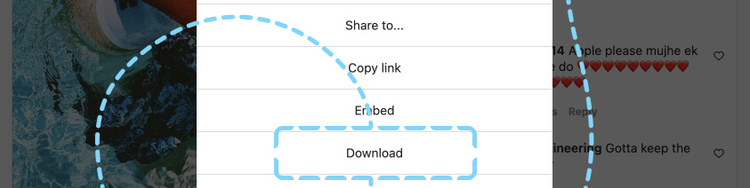

Download from posts, IGTV, and Stories
1.
Toggle the options menu (same applies to Stories and IGTV).

2.
Download the media by clicking on the download button.
3.
Voila! Download completed and saved to your downloads folder.